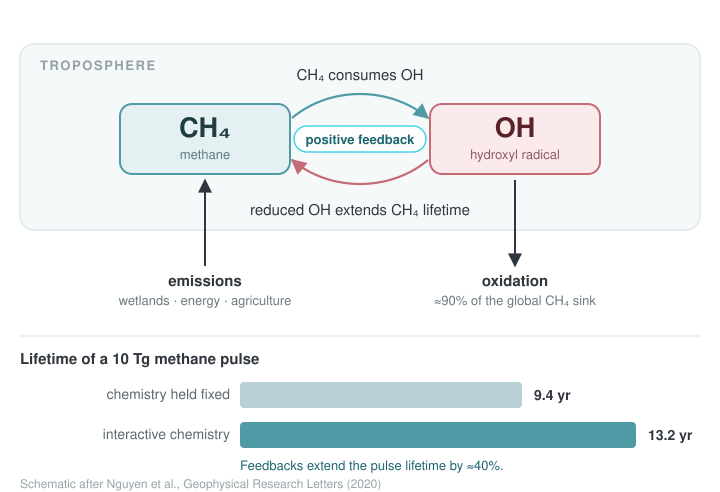

Chemical feedbacks on methane lifetime
Methane is removed from the atmosphere principally by reaction with the hydroxyl radical, OH. Because this reaction also depletes OH, an increase in methane lengthens the lifetime of the methane already present. Models that hold OH chemistry fixed therefore misestimate both the lifetime of an emissions perturbation and the emissions inferred from concentration records.
Using a coupled methane–CO–OH box model, I showed that these feedbacks extend the perturbation lifetime of a methane pulse from 9.4 to 13.2 years, an increase of approximately 40%, with corresponding implications for decadal emissions estimates.